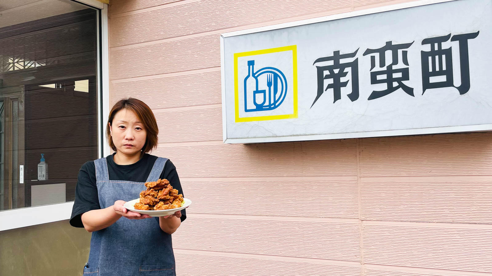
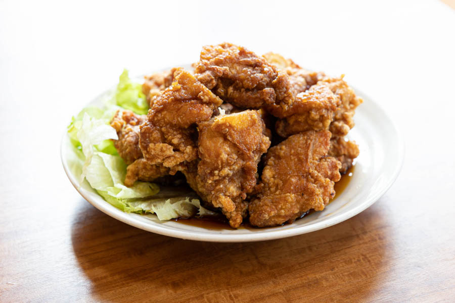
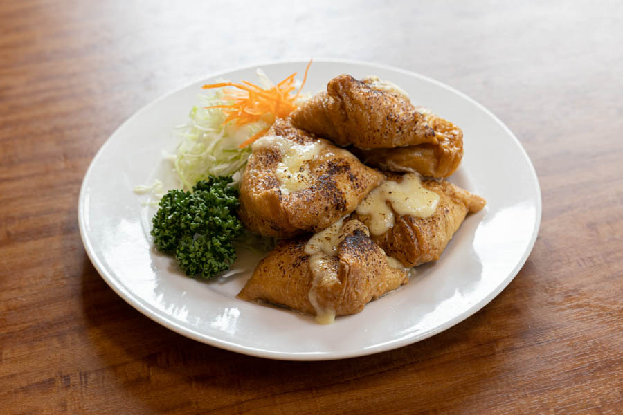

Photo Gallery
南蛮酊とは
釧路町郊外にありながら週末は行列必至の超人気店。ザンタレ発祥として全国的に有名。揚げたてのザンギに自家製甘酢ダレがたっぷりかかった「ザンタレ」は1人前600〜700gの超ボリューム。辛口の「カラタレ」も人気。
📍 北海道釧路郡釧路町遠矢1丁目39番地 営業時間：11:00〜19:00（L.O. 18:30） 定休日：月・火曜
実食レビュー
釧路B級グルメの王者
釧路発祥のザンギ文化を代表する一軒。揚げたての鶏肉に自家製タレをたっぷりかけた一皿は、サクサクとした衣の中にジューシーな肉汁が閉じ込められている。ご飯が何杯でも進む味わい。
テイクアウトも人気で、地元の常連客が電話注文で持ち帰るスタイルも定番。週末は行列ができるほどの人気ぶりで、早めの来店か事前の電話注文がおすすめ。
おすすめメニュー
- ザンタレ（定食）……揚げたてのザンギに甘酢ダレをたっぷりかけた名物。一人前600〜700g
- カラタレ……ピリ辛版のザンタレ。辛さが苦手な方はザンタレと食べ比べを
- ザンタレ（ハーフ）……一人でも安心のハーフサイズ
- カツ丼……洋食メニューも充実。厚切り柔らかカツが人気
最新の営業時間・メニューは公式情報をご確認ください。
アクセス・予約
訪問のコツ
- 週末は行列必至。開店11時に合わせての来店がおすすめ
- 一人前は大盛り。ハーフサイズでも十分な量があります
- テイクアウトは電話で事前注文すると待ち時間が短縮できます